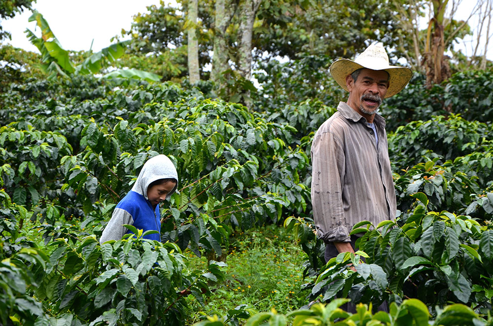
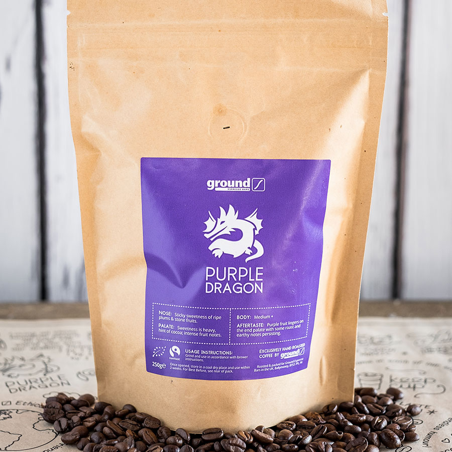

Ground espresso bars are a family owed and run business, first established in 2001 in Coleraine, Northern Ireland.
They are passionate about providing top quality products, a welcoming, comfortable and friendly environment for their customers and are fully commited to ethical trading, supporting people and the planet.
Ground Coffee, their suppliers and employees all uphold the same values of:
Ground Coffee Bars aim to support other local businesses where possible, with most of the products on offer in store made up of locally sourced ingredients. Food is prepared freshly in store, their wide selection of baked goods are baked fresh by local businesses, and they also sell the excellent products and tea by the hugely successfull, local company Suki Tea.
Ground partner with The Capucas Co-op in the mountains of Honduras, where around 300 farmers grow the coffee we enjoy.
The people of Capucas are just as passionate about their coffee, and took great pride in showing the people from Ground around their site, and tasting the special varieties grown, such as bourbon and pacamara.
Ground Coffee engage directly with the farmers and communities that produce their coffee, they also adhere to strict Fairtrade standards to ensure that all individuals, from labourers and farmers to exporters, are all treated fairly and ethically.
Their house blend, called Purple Dragon, is a triple certified coffee - approved by the Fairtrade Foundation, Rainforest Alliance and Organic Food Federation.
So with every coffee bought from Ground Coffee Espresso Bars you will be supporting the fair treatment and pay of hundreds of people, as well as supporting the sustainable use and conservation of the rainforest and its biodiversity.
Ground partnered with Capucas Co-op on projects that make a difference in their community.
In Santa Rosa fewer than 75% of people are literate and poverty remains an issue in daily life.
In 2015 Ground raised £20,000 to provide an educational Hub including an IT centre and two teaching staff for the Co-op members and their families to use. Inspired and in support of this The University of Honduras pledged a huge $100,000 towards the project - taking it from what was planned to be a small community hub into an institution transforming the local area.
Ground are continuing to fundraise to be able to set up similar projects in other coffee growing regions around the world.